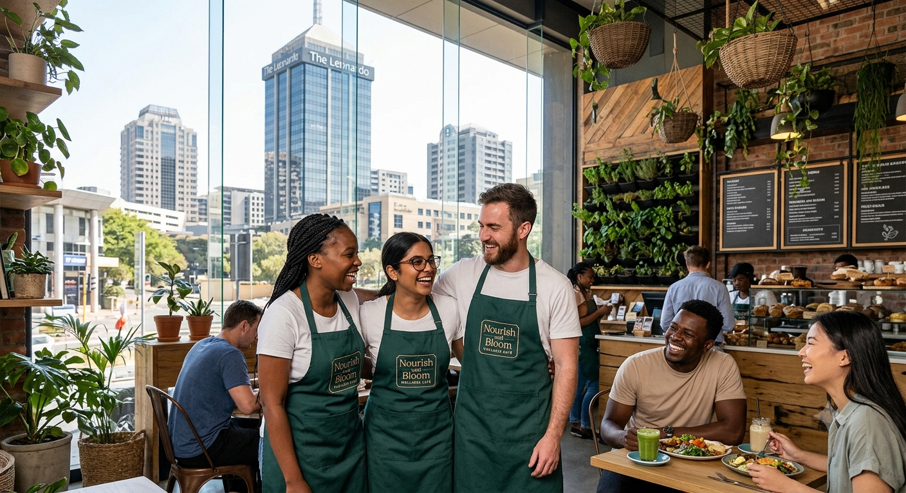

About us
From One Planter Box to a Rooftop Garden
Our History
Started in 2021, above the traffic.
Nourish and Bloom opened in October 2021 as a four-table coffee counter on Maude Street. We now seat sixty guests, grow more than forty varieties upstairs, and opened a second counter in Sandown.

Good to know
Frequently asked questions.
Yes. The rooftop is first come, first served; groups of eight or more should use the enquiry form.
There are many plant-based and vegan options on the menu. Please ask our team about ingredients.
Parking is available in the Maude Street basement, and Gautrain Sandton station is a short walk away.